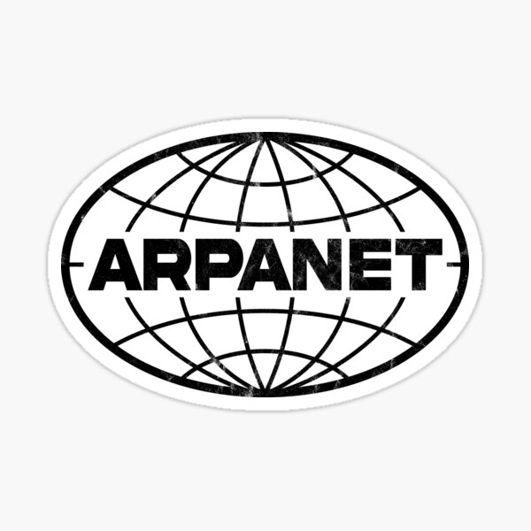
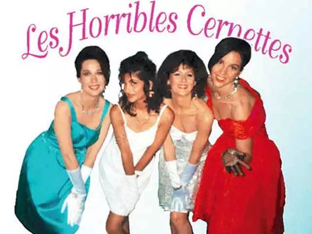
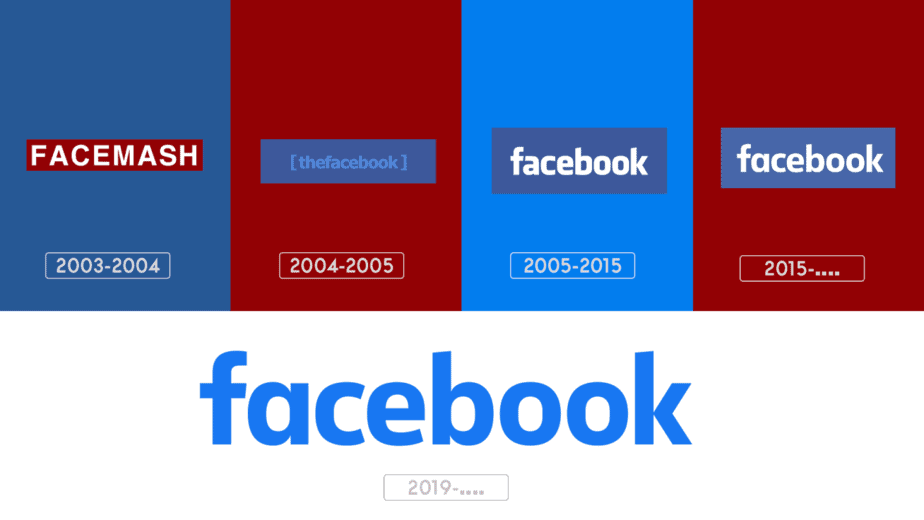
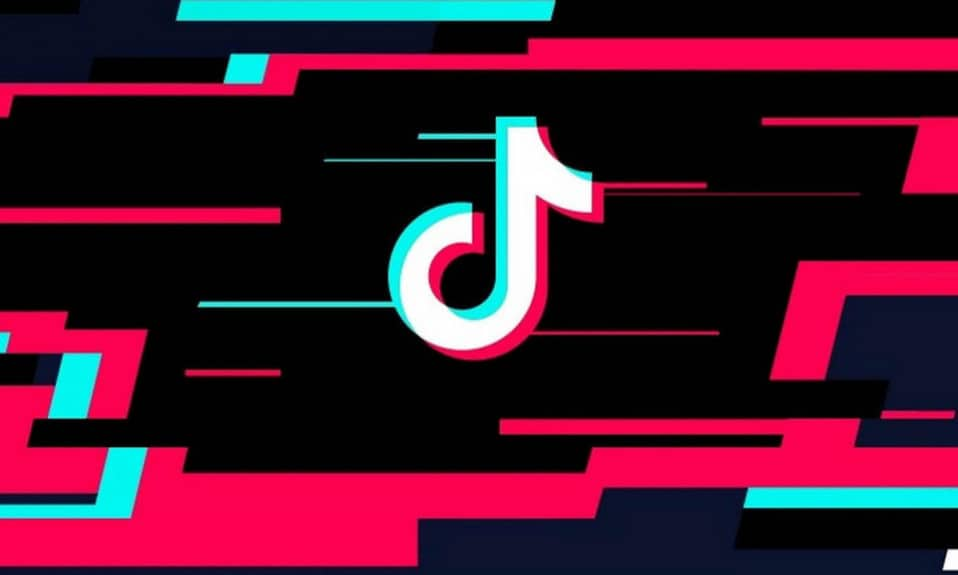
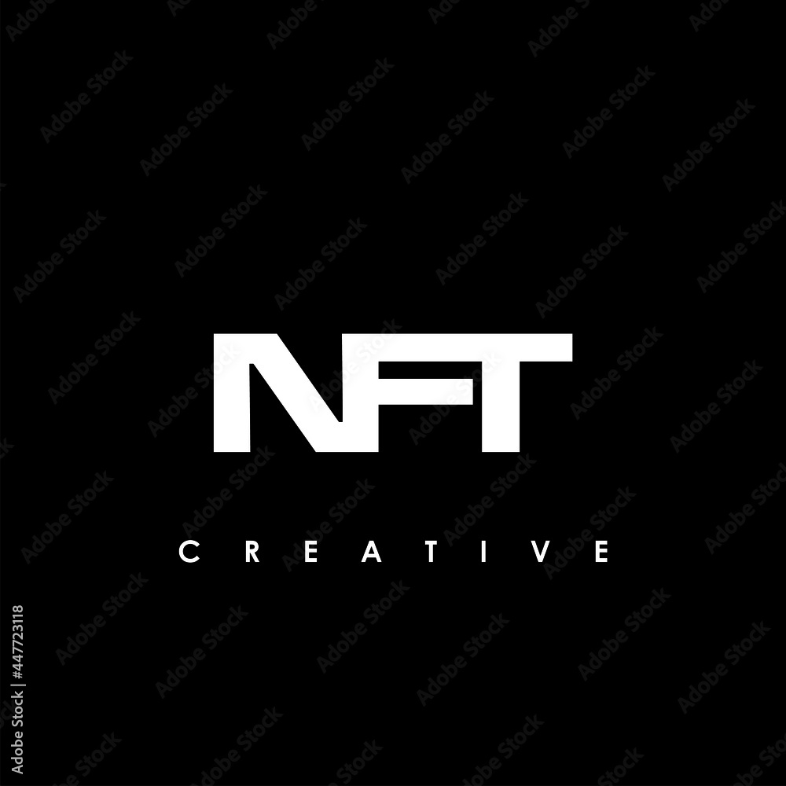

HISTORY OF THE INTERNET
Arpanet
The United States Department of Defence’s Advanced Research Projects Agency (ARPA) launches the ARPANET, the forerunner to the current Internet, in 1969. Two computers at UCLA and Stanford exchange the first communication.
Unix
A operating system with the name Unix was born.
Ray Tomlinson creates the original email programme, enabling the transmission of messages between users of various computers.
The first trans-Atlantic connection and the popularity of emailing
The University College of London and Arpanet established their first transatlantic connection in 1973. 75% of all Arpanet network activity that year was attributed to email.
The beginning of TCP/IP
1974 was a year of innovation. A plan was announced to connect Arpa-like networks into an ungoverned "inter-network" that would revolve around a transmission control protocol (which would later become TCP/IP).
The PC modem
The creation of the Internet as we know it now had a significant year in 1977. It was the year that Dennis Hayes and Dale Heatherington unveiled and first sold to computer hobbyists the first PC modem.
Spam is born
Gary Thuerk delivered the first unsolicited commercial email message (after referred to as spam) in 1978 to 600 users of the California Arpanet.

MUD: The earliest form of multiplayer games
MUD (short for MultiUser Dungeon) was created in 1979 and served as the forerunner of both World of Warcraft and Second Life. Role-playing games, interactive literature, and online chat were all combined in MUDs, which were wholly text-based virtual worlds.
Usenet
Usenet, developed by two graduate students, entered the picture in 1979 as well. Usenet was a discussion platform based on the internet that enabled users from all over the world to communicate by publishing open messages that were categorised by newsgroups.
The first emoticon
Although Scott Fahlman suggested using after a joke in 1982 rather than the original suggested by Kevin MacKenzie, many people still give that inventor credit for the emoticon's 1979 conception. The first emoticon appeared. 🙂
Domain Name System (DNS)
The Domain Name System (DNS) is made available, enabling the mapping of domain names to IP addresses, and streamlining website access.
IRC: Internet Relay Chat
Real-time chat and the instant messaging apps we use today were made possible by the introduction of Internet Relay Chat (IRC) in 1988.
First major malicious internet-based attack
1988 saw the publication of one of the first significant Internet worms. It was developed by Robert Tappan Morris and was known as "The Morris Worm"; it severely disrupted a sizable portion of the Internet.
The proposal for the World Wide Web
By laying out the fundamentals of HTTP and HTML, Tim Berners-Lee, a researcher at CERN, presents the idea of the World Wide Web.
World Wide Web protocols finished
The World Wide Web is officially launched by Tim Berners-Lee with the development of the first web server and web browser.
The first search engine
The first search engine was developed in 1990 for a school project by Montreal-based college student Alan Emtage. It was referred to as the Archie Index.
The first photo shared on the Internet
Tim Berners-Lee comes to mind. He's creating a stir once more after posting the initial image online. Les Horribles Cernettes, a vocal group, performed on the song.
First web page created
The launch of the first website with details about the World Wide Web initiative.
The first webcam
But the first webcam was one of the more intriguing innovations of this time. Its main function was to keep an eye on a certain coffee maker in a computer lab at Cambridge University so that users may avoid making unnecessary visits to empty coffee pots.
Mosaic: first graphical web browser for the general public
Release of Mosaic, the first popular graphical web browser, opens the Internet to more people.
Governments join in on the fun
The.gov and.org domain names were first used in 1993, when the White House and the UN both went online.
Internet Transactions
Without e-commerce, where would we be? The first item was bought safely online in 1994, and since then, secure internet transactions have been around.
The first secure ecommerce transaction
A Sting CD that sold for $12.48 on Dan Kohn's NetMarket might have been the item. However, according to the Internet Shopping Network, they may have made a computer equipment online purchase a month earlier.
ISPs
Internet usage increases quickly as commercial Internet service providers (ISPs) begin to provide access to the network.
The development of cryptocurrency
What better way to support e-commerce than by creating a cryptocurrency? DigiCash, developed in 1995 by computer scientist and cryptographer David Chaum, paved the path for Bitcoin and other types of digital currency.
The creation of social media
In 1996, the first social media platform is developed, making the Internet more social in addition to webmail. Six Degrees, which was established by Andrew Weinreich, has all of our favourite social media characteristics, such as unique profiles and relationships with friends.
The invention of Wi-Fi
We can date the formal creation of Wi-Fi back to 1997, and today it is nearly synonymous with the Internet. The IEEE (Institute of Electrical and Electronics Engineers) ratified the 802.11 Wi-Fi standard in this year.
Google!
Larry Page and Sergey Brin launched Google, which revolutionised web search and rose to prominence as one of the biggest online businesses.

The bubble bursts
Dotcom collapsed in 2000, leaving countless investors with enormous losses.
Wikipedia is launched
Wikipedia was one of the websites that helped create social media and collective web content when it began in 2001, still amid the dotcom crash.

VoIP goes mainstream
2003 saw the public launch of Skype, which provided Voice over IP calling with an intuitive user interface.
“The” Facebook opens to college students
Facebook is first introduced by Mark Zuckerberg, and through time it grows to become one of the biggest and most popular social media sites.
Web 2.0
Although it was first used in 1999 by Darcy DiNucci, the phrase "Web 2.0" came to be used to describe websites and Rich Internet Applications (RIA) that are very interactive and user-driven in 2004.
YouTube: streaming video for the masses
With the launch of YouTube in 2005, everyone could share and host free internet videos.
Twitter gets twittering
Twitter was introduced in 2006. The original plan was to call it twittr (after Flickr), and the first tweet said, "Just setting up my twttr."
The iPhone and the Mobile Web
Apple releases the iPhone, starting a revolution in smartphones and altering how people access the Internet.
Major move to place TV shows online
Hulu was first introduced in 2007 as a collaborative venture with ABC, NBC, and Fox to provide popular TV shows for online viewing.
“Internet Election”
In 2008, in conjunction with the U.S. Presidential election, the first "Internet election" was held. It was the first year that presidential contenders utilised the Internet to its fullest potential.
The beginning of Bitcoin
Recall how cryptocurrencies were created in 1995? Imagine going back to 2008 and seeing the birth of Bitcoin, more precisely the domain name bitcoin.org.
Instagram captures a new audience
When Instagram is introduced, social media platforms gain more traction for photo-sharing and graphic content.
The first commercial transaction using Bitcoin
The first Bitcoin transaction for a business was completed two years after the cryptocurrency's launch. Two Papa John's pizzas worth 10,000 BTC (Bitcoins)
Pinterest gets people pinning
To encourage pinning and sharing of recipes, crafts, and other content, Pinterest was introduced in 2010.
Snapchat
The first ephemeral messaging and multimedia sharing platform, Snapchat, is introduced.
Microsoft buys Skype
The internet video chatting service Skype, which permits video chats online, was bought by Microsoft.
Internet banking becomes mainstream
More people began using internet banking in 2013. 78% of Americans now favour online banking after ten years.
Internet of Things
With linked gadgets becoming more interwoven into daily life, the Internet of Things (IoT) is gaining speed.
Facebook purchases WhatsApp
Facebook bought the messaging service WhatsApp to support the expansion of their attempts to improve global communication as they continue to enjoy success.
Live streaming starts
Live streaming was made possible by the growing popularity of video as a content consumption method. Twitter bought the live broadcasting software Periscope in 2015, and Facebook introduced Facebook Live at the same time.
General Data Protection Regulation
The General Data Protection Regulation (GDPR), which establishes rules for data protection and privacy in the digital age, is enacted by the European Union.
TikTok dances to the top
In 2016, TikTok entered the market, grabbing the interest of consumers all around the world. The creation of video material to share with others grew on this platform.
Google launches their voice assistant
As technology advanced, more businesses started using voice-activated tools to enhance online experiences. Google introduced its voice assistant in 2016 via the Apollo app and Google Nest smart home device.
5G rolls out
Beginning with this year, 5G networks will be rolled out, offering wider capabilities and faster and more dependable Internet connections.
Remote Work (COVID-19)
The COVID-19 epidemic has accelerated the use of online learning, remote work, and digital communication technologies, underscoring the value of a strong Internet infrastructure.
The rise of NFTs
Non-Fungible Tokens (NFTs) started to gain popularity as a means of exchanging money for digital goods and artwork in 2021.
ChatGPT launches
ChatGPT was formally introduced in 2022. People can create messages, gather data, and more with the aid of an artificial intelligence (AI) platform.